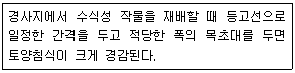
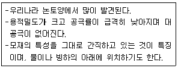
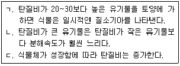
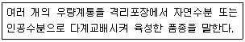
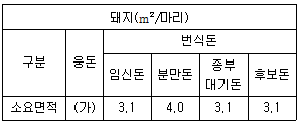

유기농업기사 (2020-09-26 기출문제)
1과목: 재배원론
1. 굴광현상에 가장 유효한 광은?
- 자외선
- 자색광
- 청색광
- 녹색광
(정답률: 81%)

2. 세포의 팽압을 유지하며, 다량원소에 해당하는 것은?
- Mo
- K
- Cu
- Zn
(정답률: 82%)
3. 다음 중 장일식물은?
- 들깨
- 담배
- 국화
- 감자
(정답률: 64%)
4. 내건성 작물의 특성에 해당되는 것은?
- 잎이 크다.
- 건조 시에 당분의 소실이 빠르다.
- 건조 시에 단백질의 소실이 빠르다.
- 세포액의 삼투압이 높다.
(정답률: 75%)
5. 다음 중 내염성 정도가 가장 큰 식물은?
- 고구마
- 가지
- 레몬
- 유채
(정답률: 79%)
6. 다음 중 작물에 따른 재배에 적합한 토성의 범위가 가장 큰 작물은?
- 콩
- 아마
- 담배
- 피
(정답률: 72%)
7. 박과 채소류 접목의 특징으로 틀린 것은?
- 저온에 대한 내성이 증대된다.
- 과습에 잘 견딘다.
- 기형과 발생을 억제한다.
- 흡비력이 강해진다.
(정답률: 70%)
8. 지력을 토대로 자연의 물질순환 원리에 따르는 농업은?
- 생태농업
- 정밀농업
- 자연농업
- 무농약농업
(정답률: 76%)
9. 삽수의 발근촉진에 주로 이용되는 생장조절제는?
- Ethylene
- ABA
- IBA
- BA
(정답률: 53%)
10. 다음 중 3년생 가지에 결실하는 것은?
- 포도
- 밤
- 감
- 사과
(정답률: 72%)
11. 가지를 수평 또는 그보다 더 아래로 휘어 가지의 성장을 억제하고 정부우세성을 이동시켜 기부에서 가지가 발생하도록 하는 것은?
- 절상
- 적엽
- 제얼
- 휘기
(정답률: 80%)
12. 다음 중 내습성이 가장 큰 것은?
- 파
- 양파
- 옥수수
- 당근
(정답률: 61%)
13. 다음 중 묘대일수 감응도가 낮으면서 만식적응성이 큰 기상 생태형은?
- Blt형
- bLt형
- blT형
- blt형
(정답률: 52%)
14. 다음 중 적산온도가 가장 낮은 것은?
- 메밀
- 벼
- 담배
- 조
(정답률: 80%)
15. 다음 중 장과류에 해당하는 것으로만 나열된 것은?
- 포도, 딸기
- 감, 귤
- 배, 사과
- 비파, 자두
(정답률: 74%)
16. 포장을 수평으로 구획하고 관개하는 방법은?
- 다공관관개법
- 수반법
- 스프링클러관개법
- 물방울관개법
(정답률: 70%)
17. 다음에서 설명하는 것은?

- 등고선 경작 재배
- 초생재배
- 단구식 재배
- 대상재배
(정답률: 47%)
18. 다음 중 작물별 안전저장 조건에서 온도가 가장 높은 것은?
- 식용감자
- 과실
- 쌀
- 엽채류
(정답률: 73%)
19. 다음 중 산성토양에 가장 강한 작물은?
- 상추
- 완두
- 고추
- 수박
(정답률: 55%)
20. 다음 중 과실 성숙과 가장 관련이 있는 것은?
- Ethylene
- ABA
- BA
- IAA
(정답률: 69%)
2과목: 토양비옥도 및 관리
21. 밭토양에서 작물을 수확한 후에도 토양에 남아 있는 질소질 비료에 대한 설명으로 옳은 것은?
- 요소태로 존재하여 나중에 경작되는 작물이 이용한다.
- 암모니아태로 토양에 흡착되어 이동하지 않는다.
- 질산태 질소가 되어 물과 함께 이동하여 손실된다.
- 부식화 작용으로 대부분 토양에 잔류한다.
(정답률: 66%)
22. 유효인산 추출방법이 아닌 것은?
- Olsen 법
- Lancaster 법
- Bray 법
- Kjeldahl 법
(정답률: 56%)
23. 염해지 토양의 특성에 대한 설명으로 틀린 것은?
- 전기전도도가 일반 경작지보다 높다.
- 유기물 함량이 일반 경작지보다 많다.
- 마그네슘, 칼륨의 함량이 일반 경작지보다 많다.
- 건조기에 백색을 나타내며 토양의 pH가 대개 8.5 이하이다.
(정답률: 68%)
24. 다음은 토양 견지성의 가소성(Plasticity)을 실험한 결과이다. 소성지수(PI)를 계산하였을 때, 다음 중 가장 사질화된 토양은?
- 액성한계(LL) : 55, 소성한계(PL) : 37
- 액성한계(LL) : 52, 소성한계(PL) : 35
- 액성한계(LL) : 50, 소성한계(PL) : 34
- 액성한계(LL) : 48, 소성한계(PL) : 33
(정답률: 70%)
25. 토양 단면에 관한 설명으로 틀린 것은?
- 통상적으로 O, A, B, C층 등으로 구분된다.
- 식물의 잔뿌리가 많이 뻗어 있는 층은 A층이다.
- C층은 유기물이 풍부하다.
- B층은 무기물이 집적되는 층이다.
(정답률: 69%)
26. 토양수분을 알맞게 공급했는데도 잘 자라던 식물이 위조상태에 도달하였다. 그 원인으로 가장 적절한 것은?
- 지나친 수분흡수
- 작물의 증산억제
- 뿌리 흡수기능의 이상
- 토양의 높은 수분퍼텐셜
(정답률: 67%)
27. 다음 설명에 해당하는 토양구조는?

- 판상구조
- 괴상구조
- 각주상구조
- 구상구조
(정답률: 67%)
28. 토양비옥도와 생산성에 기여하는 토성의 기본적 특성에 대한 설명으로 틀린 것은?
- 식물생육에 있어서 양분, 수분함량, 뿌리활착 및 신장에 영향을 미친다.
- 토성에 따라 수분 보유능에 차이가 발생한다.
- 비옥도에 관련되는 토양 물리화학성과 생물성에 직간접적으로 영향을 미친다.
- 토성은 토양 pH가 변화하는 원인의 대부분을 차지한다.
(정답률: 73%)
29. 최대용수량이 45%, 포장용수량은 35%, 초기위조점의 수분함량은 15%, 영구위조점의 수분함량은 10%였다. 이 토양의 유효수분함량은?
- 20%
- 25%
- 30%
- 35%
(정답률: 59%)
30. 다음 중 탄질비(C/N율)와 가장 밀접한 관계가 있는 것은?
- 지상부와 지하부의 생육비율
- 염기포화도
- 유기물의 분해속도
- 식물양분의 균형비율
(정답률: 60%)
31. 다음 중 콩과식물로서 뿌리혹박테리아 질소고정능력이 가장 낮은 작물은?
- 알팔파
- 대두
- 완두
- 레드클로버
(정답률: 58%)
32. 다음 원소 중 지각 내에서 함량이 가장 적은 것은?
- 산소
- 규소
- 알루미늄
- 철
(정답률: 55%)
33. 부식에 대한 설명으로 틀린 것은?
- 알칼리에는 녹으나 산에서 녹지 않는 부식물질은 부식산이다.
- 부식회는 알칼리 용액으로 추출되지 않고 남아 있는 화합물이다.
- 탄질율이 높으므로 분해될 때 질소기아를 유발한다.
- 양이온교환능력과 pH에 대한 완충능력이 크다.
(정답률: 51%)
34. 토양에서 강우에 의한 침식을 최소화하는 요인이 아닌 것은?
- 다량의 토양유기물
- 소량의 팽창성 점토광물
- 토양피각 형성
- 강우의 높은 토양 침투율
(정답률: 43%)
35. 다음 중 토양색을 결정하는 주요인자로 거리가 가장 먼 것은?
- 철
- 규소
- 망간
- 유기물
(정답률: 56%)
36. 토양 공극률을 높이기 위한 방법으로 틀린 것은?
- 유기물을 정기적으로 사용한다.
- 심근성 두과작물을 재배한다.
- 사열을 단립구조화하여 대공극을 확대한다.
- 입단토양으로 객토한다.
(정답률: 69%)
37. 탈질작용에 관한 설명으로 틀린 것은?
- 혐기적인 환경조건에서도 형성된다.
- 토양 내에 있는 탈질균에 의한 반응이다.
- 물이 담겨져 있지 않은 논토양에서 주로 일어난다.
- 대부분의 토양에서 N2까지 환원되기 전에 N2O의 형태로 가장 많이 손실된다.
(정답률: 69%)
38. 토양유실예측공식(USLE)에 들어가는 항목이 아닌 것은?
- 토양침식성 인자
- 경사도와 경사장 인자
- 강우인자
- 조도인자
(정답률: 68%)
39. 탄질비에 대한 설명으로 옳은 항목은?

- ㄱ
- ㄱ, ㄴ
- ㄴ, ㄷ
- ㄱ, ㄴ, ㄷ
(정답률: 62%)
40. 물리적 풍화작용의 분류로 가장 거리가 먼 것은?
- 온도 변화
- 물, 바람, 빙하의 작용
- 식물체 뿌리의 침투
- 토양 미생물의 활동
(정답률: 74%)
3과목: 유기농업개론
41. 성숙한 배낭 내 난세포의 수와 그 핵상으로 옳은 것은?
- 난세포 : 1개, 핵상 : n
- 난세포 : 1개, 핵상 : 2n
- 난세포 : 2개, 핵상 : n
- 난세포 : 2개, 핵상 : 2n
(정답률: 56%)
42. 시설원예지 토양의 문제점이 아닌 것은?
- 과다시비로 인한 염류집적
- 토양의 알칼리화
- 연작장해의 발생
- 양수분의 과다 흡수 초래
(정답률: 39%)
43. 미국의 소규모 유기농가들은 대규모 유기농가들과 싸워야 하는 어려운 처지가 되었다. 이 때문에 일부 소규모 농가들은 “진정한 유기농법”을 주장하며 전국시장 대신 농장 근처의 지역에만 유기농산물을 공급하며 신선함과 품질을 강조하고 있는 운동은?
- CSA
- FDA
- SPS
- CMS
(정답률: 52%)
44. 한우 생산을 위한 관행축산과 유기축산의 가축관리 및 시설기준의 차이점에 대한 설명으로 틀린 것은?
- 관행축산은 축사면적에 대한 규정이 없어 밀집사육이 가능하나, 유기축산은 축종별 축사 내 사육밀도를 준수해야 한다.
- 관행축산은 가축번식에 대한 규정이 없으나, 유기축산은 종축을 사용한 자연교배만 가능하고 인공수정에 의한 번식은 불가능하다고 규정하고 있다.
- 관행축산은 방목지 및 운동장에 대한 규정이 없으나, 유기축산은 한우의 경우 1마리당 사료작물재배지 825m2를 확보하여야 한다.
- 관행축산은 한우 사육 시 성장촉진제나 호르몬제를 사용할 수 있으나, 유기축산은 한우 사육 시 성장촉진제나 호르몬제의 사용이 제한되다.
(정답률: 63%)
45. 다음 중 볍씨 소독으로 방제가 어려운 병은?
- 잎마름선충병
- 키다리병
- 도열병
- 오갈병
(정답률: 53%)
46. F2~F4세대에는 매세대 모든 개체로부터 1립씩 채종하여 집단재배를 하고, F4 각 개채별로 F5 계통재배를 하는 것은?
- 여교배육종
- 1개체 1계통 육종
- 계통육종
- 집단육종
(정답률: 73%)
47. 유기농업에서 토양을 개선하기 위해 유기물질을 혼입하는 효과로 가장 거리가 먼 것은?
- 토양 피각화의 방지
- 침투수의 개선
- 토양의 물리적 성질 개선
- 잡초 제어
(정답률: 64%)
48. 유기농 수도작의 고품질 품종 중 중생종이 아닌 것은?
- 화성벼
- 수라벼
- 화영벼
- 오대벼
(정답률: 56%)
49. 작물의 재배에 적합한 재배적지 토성이 「사양토~식양토」에 해당하는 것은?
- 알팔파
- 티머시
- 밀
- 옥수수
(정답률: 58%)
50. 지력을 유지ㆍ증진시키기 위한 재배적 조치와 거리가 먼 것은?
- 식물 피복을 통한 토양유실 방지
- 잦은 경운
- 윤작 재배
- 충분한 양분관리
(정답률: 82%)
51. 다음 중 다년생 논잡초는?
- 참방동사니
- 매자기
- 개망초
- 돌피
(정답률: 64%)
52. “포장군락의 단위면적당 동화능력”의 계산 방법으로 옳은 것은?
- 총엽면적 × 수광능률 × 평균동화능력
- 총엽면적 × 수광능률 ÷ 평균동화능력
- 총엽면적 + 수광능률 ÷ 평균동화능력
- 총엽면적 - 수광능률 × 평균동화능력
(정답률: 73%)
53. 지역폐쇄시스템에서 작물분양과 병해충종합관리기술을 이용하여 생태계 균형 유지에 중점을 두는 농업을 일컫는 말은?
- 생태농업
- 유기농업
- 정밀농업
- 저투입ㆍ지속적 농업
(정답률: 63%)
54. 「농림축산식품부 소관 친환경농어업 육성 및 유기식품 등의 관리ㆍ지원에 관한 법률 시행규칙」 상 유기배합사료 제조용 물질 중 단미사료의 단백질류에 속하지 않는 것은?
- 대두박
- 트리트케일
- 면실박
- 들깻묵
(정답률: 69%)
55. 다음에서 설명하는 것은?

- 단순순환선발 품종
- 합성 품종
- 상호순환선벌 품종
- 영양번식 품종
(정답률: 54%)
56. 특정한 물질을 분비하여 주위 식물의 발아와 생육을 억제시키는 작물을 일컫는 말은?
- 식충작물(insectivorous crop)
- 보육작물(nurse crop)
- 주작물(main crop)
- 타감작물(allelopathic crop)
(정답률: 77%)
57. 혼작 시 유의사항으로 볼 수 없는 것은?
- 다년생 작물은 계절작물과 함께 재배한다.
- 혼작하는 작물은 생장습성과 광요구도가 서로 같아야 한다.
- 혼작 시 심근성 작물과 천근성 작물을 함께 재배하는 것이 좋다.
- 혼작하는 동안 양분흡수가 가장 왕성한 시기는 서로 달라야 한다.
(정답률: 63%)
58. 「친환경농축산물 및 유기식품 등의 인증에 관한 세부실시요령」 상 유기축산물 생산을 위한 가축의 사육조건으로 틀린 것은?
- 축사의 바닥은 부드러우면서도 미끄럽지 아니하여야 한다.
- 번식돈의 축사는 짚ㆍ톱밥ㆍ모래 또는 야초와 같은 깔짚으로 채워진 건축공간이 제공되어야 한다.
- 포유기간에는 모돈과 조기에 젖을 뗀 자돈의 생체중이 25킬로그램까지는 케이지에서 사육할 수 있다.
- 산란계는 산란상자를 설치하여야 한다.
(정답률: 45%)
59. 다음 중 유기종자의 구비조건과 가장 거리가 먼 것은?
- 고수량성 종자
- 병해충 저항성이 강한 종자
- 화학적 소독을 거치지 않은 종자
- 적어도 1세대를 유기농법적으로 재배한 작물로부터 채종된 종자
(정답률: 66%)
60. 우리나라의 연도별 유기농업 관련 정책으로 틀린 것은?
- 1991년 : 농림부에 유기농업발전 기획단 설치
- 1997년 : 환경농업육성법 제정
- 1998년 : 친환경농업 원년 선포
- 2004년 : 친환경농업 직접지불제 도입
(정답률: 52%)
4과목: 유기식품 가공.유통론
61. 다음 중 유기식품에 사용할 수 있는 것은?
- 방사선 조사 처리된 건조 채소
- 유전자 변형 옥수수
- 유전자가 변형되지 않은 식품가공용 미생물
- 비유기가공식품과 함께 저장ㆍ보관된 과일
(정답률: 71%)
62. 유기농산물을 생산하는 농가가 표준규격에 근거하여 농산물을 등급화하여 출하하려고 한다. 이 때 등급 규격 항목에 해당하지 않는 것은?
- 색택
- 경결점과
- 생산이력
- 낱개의 고르기
(정답률: 57%)
63. 농산물 유통조직의 손익계산서에서 판매관리비 항목에 포함되지 않는 것은?
- 성과금
- 지급임차비
- 기부금
- 공공요금
(정답률: 61%)
64. 친환경농산물 정보 조회 서비스에서 제공하는 정보가 아닌 것은?
- 인증품목
- 대표자명
- 농장 소재지
- 대표자의 친환경농업 교육일지
(정답률: 82%)
65. 화학적 소독법 중 소독작용에 미치는 조건에 대한 설명으로 틀린 것은?
- 접촉시간이 충분할수록 효과가 크다.
- 유기물질이 있을 때 효과가 크다.
- 온도가 높을수록 효과가 크다.
- 농도가 짙을수록 효과가 크다.
(정답률: 54%)
66. 유기식품의 표시방법으로 틀린 것은?
- 특정 원재료로 유기농축산물만을 사용한 제품의 경우 “유기”라고 원재료명 및 함량 표시란에만 표시할 수 있다.
- 특정 원재료로 유기농축산물만을 사용한 제품의 경우 해당 원재료명의 일부로 “유기”라는 용어를 표시할 수 있다.
- 최종제품에 유기농산물이 70% 이상 남아있는 경우에는 “유기”라고 주 표시면을 제외한 표시면에 표시할 수 있다.
- 최종제품에 유기농산물이 99% 남아있는 경우에는 제품명에 유기농 99%라 표시할 수 있다.
(정답률: 38%)
67. 효과적인 마케팅 전략을 수립하기 위한 핵심요소(4P)는?
- Product-Price-Place-People
- Product-Price-Process-Promotion
- Product-Price-Place-Promotion
- Product-Price-Place-Physical Evidence
(정답률: 76%)
68. 일반적인 레토르트 포장기법에 대한 설명이 아닌 것은?
- 고온살균을 하므로 재질의 특성은 높은 살균온도에 견디는 내열성이 중요하다.
- 식품의 유통기한은 산소 투과에 의한 품질변화에 의하여 결정된다.
- 식품을 포장하고 고온고압에서 살균한 후 밀봉한다.
- 주로 사용되는 재료는 PET, AL, PP이다.
(정답률: 53%)
69. 식품의 기준 및 규격 상 음료류에 속하지 않는 것은?
- 사과를 이용하여 만든 농축과일즙
- 식물성 원료를 발효시켜 만든 유산균음료
- 포도를 발효시켜 만든 와인
- 채소를 이용하여 만든 농축채소즙
(정답률: 70%)
70. 식품 중의 대장균군 검사 결과 MPN 값이 50이 나왔다면, 검체 100ml 중에 존재하는 대장균군의 수는 몇 개인가?
- 5
- 50
- 500
- 5000
(정답률: 49%)
71. 방사성 물질의 식품오염에 대한 설명으로 옳은 것은?
- 빗물, 수돗물, 우물물 중 방사성 물질의 오염을 받기 쉬운 것은 수돗물이다.
- 어패류의 경우 방사성 물질이 먹이사슬을 통해 생물 농축되지 않는다.
- 인체에 가장 피해를 많이 주는 것은 반감기가 짧은 물질이다.
- 식품오염과 관련된 핵종으로 위생상 문제가 되는 것은 90Sr, 137Cs, 131I 등이다.
(정답률: 58%)
72. 대장균군에 대한 설명으로 옳은 것은?
- 대장균군이 존재하는 식품을 섭취하면 100% 식중독에 걸린다.
- 대장균군은 편성혐기성 세균이며 신경독성을 나타내는 독소를 생산한다.
- 대장균군의 정성시험은 추정ㆍ확정ㆍ완전시험의 3단계로 시행한다.
- 대장균군의 독소는 급격한 중독증상을 나타내며 심한 경우 언어장애, 사지마비를 일으킨다.
(정답률: 48%)
73. 두부제조 원리에 해당하는 설명으로 옳은 것은?
- 글리시닌(glycinin)의 산성용액에서 용해 및 인산에 의한 응고
- 글리시닌(glycinin)의 염류용액에서 용해 및 칼슘염에 의한 응고
- 글리시닌(glycinin)의 산성용액에서 석출 및 인산에 의한 용해
- 글리시닌(glycinin)의 염류용액에서 석출 및 칼슘염에 의한 용해
(정답률: 73%)
74. 다음 중 농산물 산지 유통시설을 개선하는 것과 직접적인 연관이 있는 것은?
- 중매인 표준소득율 인하
- 농산물 안정기금 설치
- 쌀 매매업을 신고제로 전환
- 청과물 주산단지 종합유통시설 설치
(정답률: 73%)
75. 정부의 국내산 유기가공식품 유통활성화 정책으로 부적합한 것은?
- 유기식품에 대한 신뢰도 제고
- 유기식품인증제 추진 및 인증기관 지정 등 유기식품 관리체계 정비
- 수입유기식품의 표시 자율화
- 유기식품의 품질 향상 지원
(정답률: 77%)
76. 111.1℃에서 D값이 10분인 미생물을 함유한 식품이 있다. z값이 10℃인 경우 121.1℃에서 D값을 계산하면?
- 1분
- 5분
- 10분
- 100분
(정답률: 44%)
77. 식품위생법 시행규칙에 근거하여 식품 영업에 종사하지 못하는 질병의 종류가 아닌 것은?
- 콜레라
- A형 간염
- 화농성 질환
- 유행성이하선염
(정답률: 60%)
78. 배, 감귤의 농산물 표준거래 단위 구성은?
- 5 kg, 10 kg
- 3 kg, 5 kg, 7 kg
- 3 kg, 5 kg, 7 kg, 9 kg, 11 kg
- 3 kg, 5 kg, 7.5 kg, 10 kg, 15 kg
(정답률: 65%)
79. 열수축 필름에 대한 설명으로 틀린 것은?
- 플라스틱 필름을 만든 후 그 필림이 용융하지 않을 정도의 고온에서 연신하여 만든다.
- 분자구조가 연신한 방향으로 배열한 채 결정화 된다.
- 가열할 경우 분자들이 연신전의 배열로 돌아가는 수축현상이 일어난다.
- 연신 처리를 통하여 기계적 강도가 낮아진다.
(정답률: 64%)
80. 제조 공정상 위생적인 측면에서 김치 제조가 다른 식품보다 상대적으로 안전한 이유를 올바르게 묶은 것은?
- 원료의 세척, 소금 첨가, 젖산균 번식
- 설탕 첨가, 소금 첨가, 미생물번식 억제물질 첨가
- 설탕 첨가, 미생물번식 억제물질 첨가, 원료의 세척
- 냉장보관, 고초균 번식, 저장용기의 살균
(정답률: 74%)
5과목: 유기농업관련 규정
81. 「농림축산식품부 소관 친환경농어업 육성 및 유기식품 등의 관리ㆍ지원에 관한 법률 시행규칙」상 친환경농산물 표시 기준에 대한 내용으로 옳은 것은?
- 표시도형의 색상은 따로 규정하지 않고 있다.
- 문자의 활재체는 국문 및 영문 모두 고딕체로 한다.
- 표시도형의 크기는 포장재의 크기별로 정해져 있다.
- 천연ㆍ자연ㆍ무공해 및 내추럴 등 강조 표시는 가능하다.
(정답률: 64%)
82. 「친환경농어업 육성 및 유기식품 등의 관리ㆍ지원에 관한 법률 시행령」상 판매ㆍ유통 중인 인증품에 대한 조사행위를 거부ㆍ방해 또는 기피할 경우 2회 위반 시에 부과되는 과태료 금액은?
- 100만원
- 300만원
- 500만원
- 1000만원
(정답률: 46%)
83. 「농림축산식품부 소관 친환경농어업 육성 및 유기식품 등의 관리ㆍ지원에 관한 법률 시행규칙」에서 토양개량과 작물생육을 위하여 사용가능한 물질 중 사용가능 조건이 고온발효로 50℃ 이상에서 7일 이상 발효된 것에 해당해야 사용이 가능한 물질은?
- 사람의 배설물
- 대두박
- 혈분
- 골분
(정답률: 70%)
84. 「친환경농축산물 및 유기식품 등의 인증에 관한 세부실시 요령」상 유기축산물에서 가금류의 사육장 및 사육조건의 내용으로 틀린 것은?
- 가금은 개방조건에서 사육되어야 한다.
- 가금의 케이지 사육은 필요 시 농림축산식품부장관이 인정한 범위 내에서 가능하다.
- 가금은 기후조건이 허용하는 한 야외 방목장에 접근이 가능하여야 한다.
- 물오리류는 기후조건에 따라 가능한 시냇물ㆍ연못 또는 호수에 접근이 가능하여야 한다.
(정답률: 67%)
85. 「농림축산식품부 소관 친환경농어업 육성 및 유기식품 등의 관리ㆍ지원에 관한 법률 시행규칙」상 유기축산물의 인증기준에서 규정하고 있는 요건으로 틀린 것은?
- 유기축산물 인증을 받은 가축과 일반가축은 어떤 경우에도 병행해서 사육하지 아니한다.
- 반추가축에게 담근먹이(사일리지)만 급여하지 아니 한다.
- 가축에게 생활용수 수질기준에 적합한 음용수를 상시 급여한다.
- 유전자변형농산물 또는 유전자변형농산물에서 유래한 물질은 급여하지 아니 한다.
(정답률: 51%)
86. 「친환경농어업 육성 및 유기식품 등의 관리ㆍ지원에 관한 법률」상 인증기관의 지정을 받지 아니하고 인증업무를 행한 자에 대한 벌칙에 해당하는 것은?
- 1년 이하의 징역 또는 1천만원 이하의 벌금
- 2년 이하의 징역 또는 2천만원 이하의 벌금
- 3년 이하의 징역 또는 3천만원 이하의 벌금
- 4년 이하의 징역 또는 4천만원 이하의 벌금
(정답률: 50%)
87. 「친환경농축산물 및 유기식품 등의 인증에 관한 세부실시 요령」상 인증기준의 세부사항 용어 정의에 대한 내용으로 틀린 것은?
- “병행생산”이라 함은 인증을 받은 자가 인증 받은 품목과 같은 품목의 일반농산물ㆍ가공품 또는 인증종류가 다른 인증품을 생산하거나 취급하는 것을 말한다.
- “유기합성농약으로 처리된 종자”라 함은 종자를 소독하기 위해 유기합성농약으로 분의(粉依), 도포(塗布), 침지(浸漬) 등의 처리를 한 종자를 말한다.
- “싹을 틔워 직접 먹는 농산물”이라 함은 물을 이용한 온ㆍ습도 관리로 종실(種實)의 싹을 틔워 종실ㆍ싹ㆍ줄기ㆍ뿌리를 먹는 농산물(본엽이 전개된 것 포함)을 말한다.
- “배지(培地)”라 함은 버섯류, 양액재배농산물 등의 생육에 필요한 양분의 전부 또는 일부를 공급하거나 작물체가 자랄 수 있도록 하기 위해 조성된 토양이외의 물질을 말한다.
(정답률: 56%)
88. 「친환경농축산물 및 유기식품 등의 인증에 관한 세부실시 요령」상 무농약농산물 경영관련 자료의 기록기간에 대한 내용으로 틀린 것은?
- 경영관련 자료는 최근 2년 이상 기록하여야 한다.
- 경영관련 자료와 농산물의 생산과정 등을 기록한 인증품 생산계획서와 필요한 관련 정보를 국립농산물품질관리원장 또는 인증기관의 장이 심사 등을 위하여 제출 또는 열람을 요구하는 때에는 제출하여야 한다.
- 최근 2년 이내에 인증경력이 없는 사업자가 신규로 인증을 신청하는 경우에는 인증신청시부터 기록할 수 있다.
- 인삼 등 매년 수확하지 않는 다년생 작물을 2년 이상 재배하고 있는 경우 경영관련 자료를 파종일 이후부터 기록하여야 한다.
(정답률: 35%)
89. 「농림축산식품부 소관 친환경농어업 육성 및 유기식품 등의 관리ㆍ지원에 관한 법률 시행규칙」상 인증품 숙성을 위해 에틸렌 사용이 가능한 품목이 아닌 것은?
- 감
- 키위
- 사과
- 바나나
(정답률: 60%)
90. 「농림축산식품부 소관 친환경농어업 육성 및 유기식품 등의 관리ㆍ지원에 관한 법률 시행규칙」상 무농약농산물등의 인증대상이 아닌 것은?
- 무농약농산물을 생산하는 자
- 무항생제축산물을 생산하는 자
- 무농약농산물을 취급하는 자
- 무비료농산물을 생산하는 자
(정답률: 68%)
91. 「농림축산식품부 소관 친환경농어업 육성 및 유기식품 등의 관리ㆍ지원에 관한 법률 시행규칙」에서 규정한 허용물질 중 유기농산물의 토양개량과 작물생육을 위하여 사용이 가능한 물질은?
- 황산칼륨(천연에서 유래, 단순 물리적으로 가공한 것)
- 천적(생태계 교란종이 아닐 것)
- 님(Neem) 추출물(님에서 추출된 천연물질일 것)
- 담배잎차(순수니코틴은 제외, 물로 추출한 것일 것)
(정답률: 42%)
92. 「농림축산식품부 소관 친환경농어업 육성 및 유기식품 등의 관리ㆍ지원에 관한 법률 시행규칙」 및 「친환경농축산물 및 유기식품 등의 인증에 관한 세부실시 요령」상 친환경농산물 인증심사, 판정 및 재심사의 절차와 방법으로 틀린 것은?
- 현장심사는 작물이 생육 중인 시기, 가축이 사육 중인 시기에 실시하여야 한다.
- 전체 구성원을 심사한 경우 구성원별로 각각 적합과 부적합으로 판정한다.
- 표본심사를 하는 경우 심사대상자가 모두 적합한 경우에만 단체에 대해 적합으로 판정한다.
- 인증 신청인이 인증 부적합 판정에 대하여 재심사를 받으려면 부적합 통지를 받은 날로부터 10일 이내에 재심사신청서를 제출하여야 한다.
(정답률: 55%)
93. 「친환경농축산물 및 유기식품 등의 인증에 관한 세부실시 요령」상 재배포장, 용수, 종자에 관한 내용으로 옳은 것은?
- 전환기간 동안에는 화학비료를 사용하여도 된다.
- 사용되는 용수는 먹는 물 기준 이상이어야 한다.
- 재배포장은 최근 1년간 인증기준 위반으로 인증취소처분을 받은 재배지가 아니어야 한다.
- 종자ㆍ묘는 최소한 2세대 또는 다년생의 경우 세 번의 생육기간동안 관련 규정에 따라 재배한 식물로부터 유래된 것을 사용하여야 한다.
(정답률: 57%)
94. 「농림축산식품부 소관 친환경농어업 육성 및 유기식품 등의 관리ㆍ지원에 관한 법률 시행규칙」상 인증품에 대한 검사 결과 잔류물질이 검출되는 등 인증기준에 맞지 아니한 때의 행정처분 기준은?
- 해당 인증품의 세부 표시사항의 변경
- 인증품 판매금지 7일
- 해당 인증품의 인증표시 제거ㆍ정지
- 표시정지 3개월
(정답률: 71%)
95. 「농림축산식품부 소관 친환경농어업 육성 및 유기식품 등의 관리ㆍ지원에 관한 법률 시행규칙」상 유기농산물 및 유기임산물의 병해충 관리를 위하여 사용이 가능한 물질과 사용가능 조건이 바르게 짝지어진 것이 아닌것은?
- 누룩곰팡이속(Aspergillus spp.)의 발효 생산물(미생물의 배양과정이 끝난 후에 화학물질의 첨가나 화학적 제조공정을 거치지 않을 것)
- 인산철(달팽이 관리용으로만 사용할 것)
- 해수 및 천일염(잔류농약이 검출되지 않을 것)
- 키토산(식품의약품안전처에서 고사한 품질규격에 적합할 것)
(정답률: 39%)
96. 「친환경농어업 육성 및 유기식품 등의 관리ㆍ지원에 관한 법률」상 농림축산식품부장관 또는 해상수산부장관은 관계 중앙행정기관의 장과 협의하여 친환경농어업 발전을 위한 친환경농업 육성계획 또는 친환경어업 육성 계획을 몇 년 마다 세워야 하는가?
- 1년
- 2년
- 3년
- 5년
(정답률: 73%)
97. 다음 표는 「친환경농축산물 및 유기식품 등의 인증에 관한 세부실시 요령」상 유기가축 1마리당 갖추어야 하는 가축사육시설의 소요면적(단위:m2)이다. (가)에 알맞은 내용은?

- 3.5
- 8.2
- 10.4
- 15.5
(정답률: 56%)
98. 「농림축산식품부 소관 친환경농어업 육성 및 유기식품 등의 관리ㆍ지원에 관한 법률 시행규칙」에 의해 인증사업자는 법에 따라 자재ㆍ원료의 사용에 관한 자료 또는 문서, 인증품의 생산, 제조ㆍ가공 또는 취급 실적에 관한 자료 또는 문서를 그 생산년도 다음 해부터 몇 년간 보관하여야 하는가?
- 1년
- 2년
- 3년
- 5년
(정답률: 47%)
99. 「친환경농축산물 및 유기식품 등의 인증에 관한 세부실시 요령」상 유기가공식품의 인증기준에 있어 유기원료 비율의 계산법으로 틀린 것은?
- 원료별로 단위가 달라 중량과 부피가 병존하는 때에는 최종 제품의 단위로 통일하여 계산한다.
- 제품에 인위적으로 첨가하는 물과 소금을 제외한 제품 중량의 5퍼센트 비율 내에서 비유기 원료 및 허용물질을 사용할 수 있다.
- 농축, 희석 등 가공된 원료 또는 첨가물은 가공 이전의 상태로 환원한 중량 또는 부피로 계산한다.
- 비율 계산은 유기가공식품의 생산에 투입된 모든 원료의 중량, 첨가물의 중량, 포장재 및 용기의 중량을 포함하여 계산한다.
(정답률: 52%)
100. 「친환경농어업 육성 및 유기식품 등의 관리ㆍ지원에 관한 법률」에 따라 유기식품 등의 인증의 유효기간은 인증을 받은 날부터 언제까지인가?
- 1년
- 2년
- 3년
- 4년
(정답률: 59%)